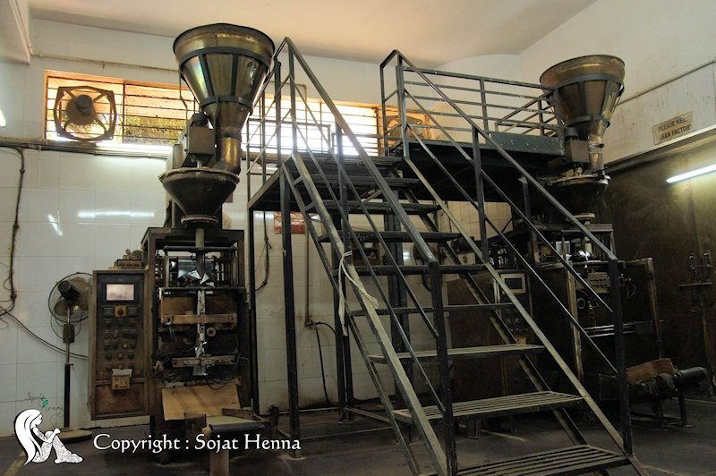

2018年10月、インドにおけるヘナの名産地ソジャットを訪問しました。
目的は、ヘナの畑をより深く知ること。乾いた高温の風を知ること。土を知ること。ヘナを育てる人をより深く知ること。ヘナを商う人をより深く知ること。こんなふうに、ヘナと、ヘナに係る人々とより深く知りあうこと、です。
ヘナ畑で青々と茂る美しいヘナの真の姿をレポートした前稿に続いて、ソジャットヘナを生み出す工場についてレポートします。
ソジャットヘナを製造している工場は、ソジャットから1,000㎞離れたバローダにあります。ソジャットヘナの心地よさは、トラバリー品質と説明することが適しています。
料理を作る時、素材が最高品質ならば出来上がった料理も最高になるか?と考えてみると、答えはyesでもあり、noでもあります。
素材が料理になるまでの工程自体が最高品質ならば料理が最高になる可能性は高まります。
料理の方法を間違えた結果、不幸な料理になることもあります。
ソジャットヘナは、最高品質のヘナの葉を、トラバリー品質によって仕上げることで、あの心地良さを生み出しています。
写真でご説明します。
私達が親しくしているソジャット村の中にある伝統的なヘナ工場と、トラバリーの違いは、事実としてあります。
ですがこの比較は、トラバリーの工場と伝統的な工場との間での優劣を言っているのではありません。
【伝統的なソジャット村の工場】
これは、伝統的にヘナを製品化し、主としてインド国内で使うヘナとしてベストな生産方法です。
この伝統的な工場も、名産地ソジャットのプライドを持って、最善を尽くしてヘナを製品化しており、床に積ったヘナの粉も本当に素晴らしい品質です。
人類の歴史にヘナが定着し始めてから数千年。最良のヘナを育て、刈り取り、製品化してきたのは彼らです。
ここに尊敬の念なくしてヘナを語ることはできません。
では、『ソジャットヘナ』はどうして、伝統的な工場で生み出されるヘナ商品と使用感などが大きく異なるのか？ということが疑問になると思います。
出来上がった製品の目的は様々で、その目的に応じた違いがあり、トラバリー品質とは、諸外国で化粧品として扱われる、どの年代の生産ロットも常に優れている、ということを目的にするならば、最良の生産体制を整えています、ということなのです。
ですから、ソジャットのプライドに基づく伝統的な工場で、そこから生み出される商品は、その対象としている人を幸せにしているのだという事実をご理解頂き、その上で『ソジャットヘナ』の品質を生み出す秘密の一端をお伝えします。
【ソジャットヘナは、引き算で高品質を生み出しています】
私達が考えるヘナの品質管理とは、『引き算で作ることによって喜びが増えること』なのです。『ソジャットヘナ』は酸化剤、化学色素やグアガムをはじめとする増粘剤などを一切使わずに、ヘナの本質を最大限に活かして製品化しています。
たとえば、私たちはインドの現場で、ヘナの葉を食べて品質をチェックすることもします（※１・※２）。
自分たちが扱っているヘナが本物であることを熟知しているからです。
※1 日本ではしないでください
※2 ソジャットヘナ以外のヘナ商材については一切関知していません
【ヘナは砂とともに生きる植物だから】
伝統的な工場では、大型送風機でヘナの葉と他の部位を分離します。
手前にある砂の山にご注目ください。
葉についた微細な砂をしっかり取り除くことがまず大切です。除かれていく砂はまさに『チリも積もれば山となる』です。
ヘナは、水をやれば育ちます。ですが、インドの人々が選んだのは雨が降らないソジャット。ヘナは、乾燥しきった大地で元気に育つ不思議なハーブです。それゆえに「ヘナは砂とともに生きる植物」なのです。
この作業丁寧に行えば、使用感は格段に上がります。
トラバリーでは、微細な粉末状になったヘナをさらにふるいにかけてより厳密に分離させます。

【掃除の徹底】
伝統的な工場では、掃除についてはある程度の間隔を開けて行います。
トラバリーでは、その間隔を密にしており、『いつ見ても床がピカピカ』という状態を作ります。
直接製品に関係してこない部分でも徹底しています。
それでは、トラバリー品質を生み出す工場内部からいくつか写真でご紹介しています。
【パッケージへの封入作業】

【素材を混ぜる工程】
【5年経ったヘナ】
ヘナは、低灌木（ていかんぼく）と呼ばれる種類の木です。お茶の木も同じで、放置すると数メートルまで育ちます。このヘナの木はトラバリーの工場の敷地に植えて5年経過した株です。葉の位置がここまで高いと手仕事で摘み取るのは無理がありますから、畑では腰くらいの高さまでに揃えています。
【トラバリーのヘナ工場に隣接して新設された化粧品製造工場】
このように、ヘナからはじまって現代の先端的な化粧品製造までを行えるハラール認証、ISO認定工場で、『ソジャットヘナ』を生みだし、日本においては化粧品として輸入・登録してから、皆様にお届けしています。
（ソジャットヘナが見たソジャット。その３に続く） |